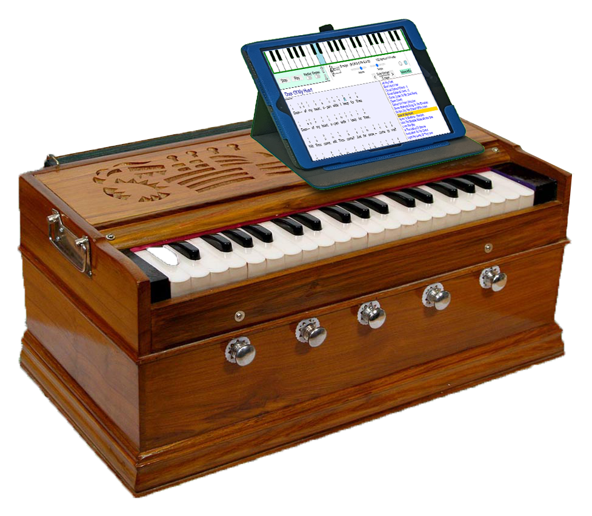

CHosmicarmonium

This is an example of what an "electronic harmonium" may look like. It will play like a regular harmonium but the chants will be heard through speakers or headphones. You will be able to tap on the display to see and hear the chants playing automatically. Or play them yourself on the keyboard. The electronic harmonium will teach you how to play with the correct notes and timing.
Cosmic Harmonium helps you learn to play the chants correctly as shown in Cosmic Chants. As much as possible, the notes and timing are identical with those in the book.
You can play the chants individually, or play all the chants sequentially in a medley. If necessary, the key, speed, and volume are adjustable.
Play Cosmic Harmonium Now
Latest Version 321-09-25
The version name is based on the date when it was created, using the Yuga dating system as explained by Sri Yukteswar in The Holy Science. For simplicity, 321 Dwapara is substituted for 2021 A.D. For example 321-09-25 is September 25th, 2021. Sri Yukteswar suggested the use of the Yuga dating system, since it "recommends itself to reason."